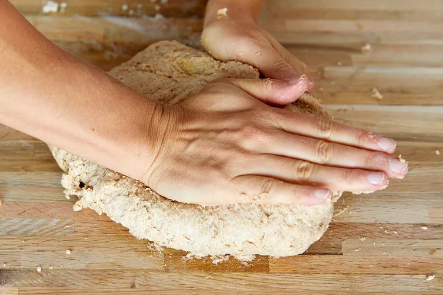
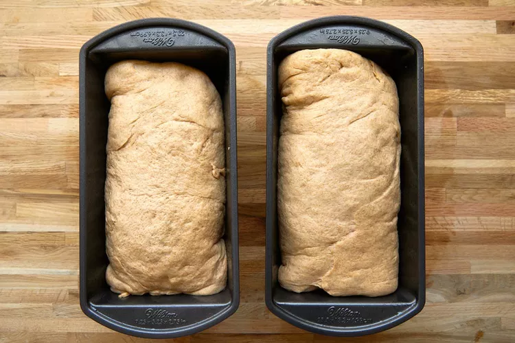
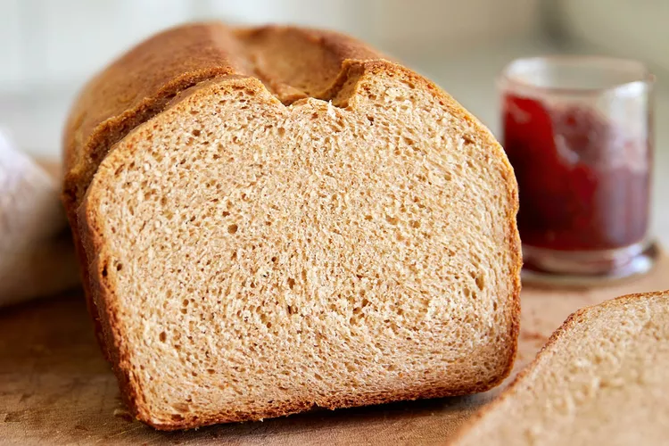
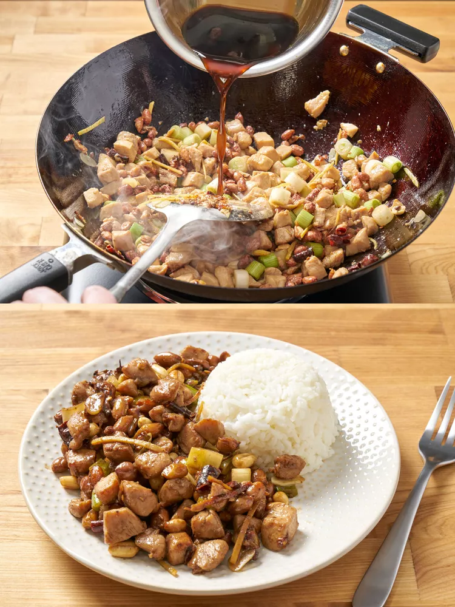
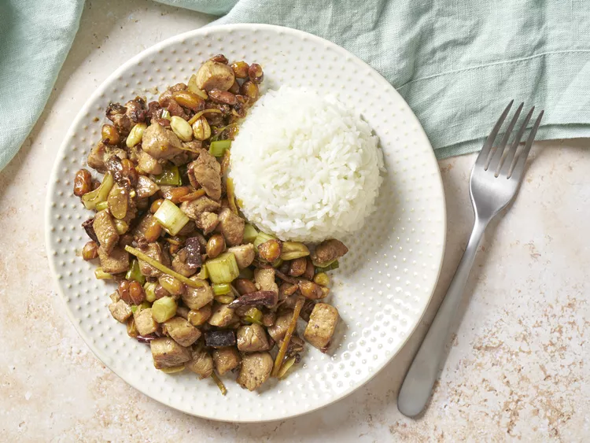
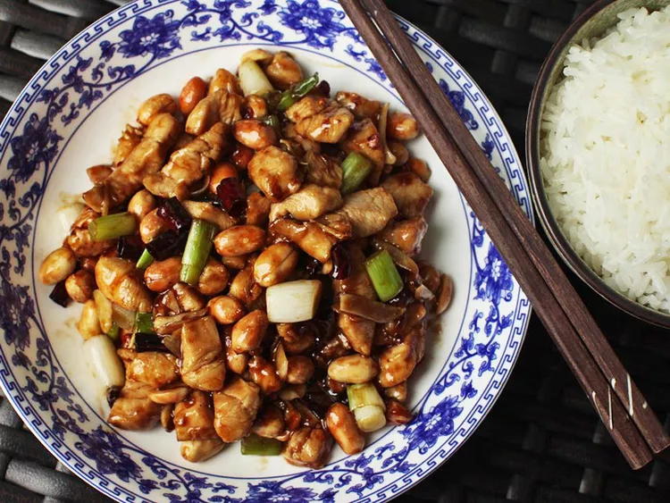
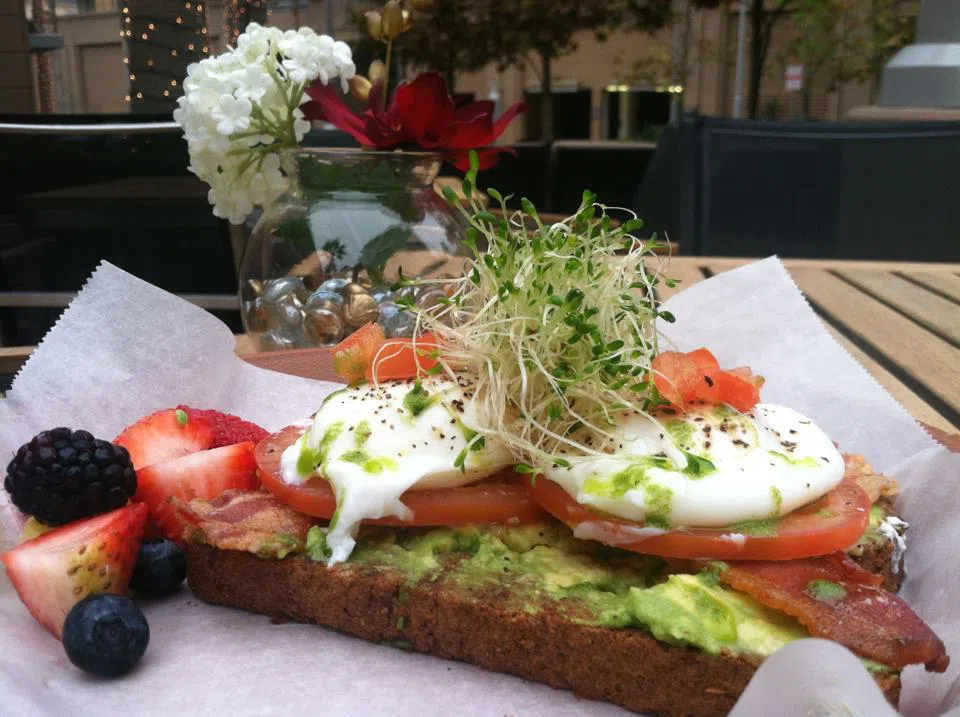

Whole Wheat Bread
Origin: Fertile Crescent Source: Family Recipe Category: Main course Online resources from Simple Recipes
Recipe Ingredients
- Unsalted butter
- Milk
- Whole wheat flour
- All-purpose flour
Recipe Steps
- Warm the milk in the microwave, stirring in between, just to take the chill off.
- In a large bowl, whisk whole wheat flour, bread flour, and salt.
- Pour the milk and yeast mixture into well in the flour.
- Add the butter and honey mixture.
- As you knead, the dough should feel soft, pliable, and a little tacky.
- Cover with plastic wrap or a clean dish towel and let it sit on the counter until it has just about doubled in size.
- Gently flatten the dough with the tips of your fingers to form a puffy oval roughly the width of your baking pan.
- Preheat the oven to 375°F halfway through second rise and bake the loaves.
- When the loaves have finished baking, remove from oven and baste the tops with butter one more time.
Additional Food images
 Kung Pao Chicken
Origin: Beijing Source: Family Recipe Category: Main course This recipe comes from my mother. Because Kung Pao Chicken is a very common dish in Beijing. When I’m not at home, I often think of Kung Pao Chicken made at home.
Recipe Ingredients
- Skinless chicken breasts
- Unsalted peanuts
- Dried red chili peppers
- Green bell pepper
- Red bell pepper
- Diced scallions
- Garlic
- Fresh ginger
- Soy sauce
- Fresh ginger
- Rice wine
- Fresh ginger
- Cornstarch
- Rice vinegar
- Hoisin sauce
Recipe Steps
- Combine the chicken with the marinade ingredients: soy sauce, rice wine (or sherry), and cornstarch.
- Mix together all the sauce ingredients: soy sauce, rice vinegar, hoisin sauce, sugar, cornstarch, and chicken broth.
- Add the marinated chicken and stir-fry until it turns white and is nearly cooked through.
- Add the minced garlic, ginger, and chopped dried red chili peppers.
- Return the cooked chicken to the wok and stir everything together.
- Add the unsalted peanuts.
- Add the diced scallions and stir for another minute.
Additional Food images
 Avocado toast
Origin: Australia Source: School dining service Category: Breakfast I used to make avocado toast when I was working in a School cafeteria. I think it is relatively simple to make and nutritious, so I will also choose it as my breakfast.
Recipe Ingredients
- Avocado
- Whole wheat
- Salt and pepper
- Red pepper flakes
- Olive oil
- Lemon juice
Recipe Steps
- Toast the Bread.
- Cut the ripe avocado in half, remove the pit, and scoop out the flesh into a bowl.
- Use a fork to mash the avocado in the bowl. You can make it as smooth or as chunky as you prefer.
- For a subtle garlic flavor, cut a clove of garlic in half and rub the cut side on the toasted bread slices.
- Spread the mashed avocado evenly onto the toasted bread slices.
- Add A drizzle of olive oil and lemon juices